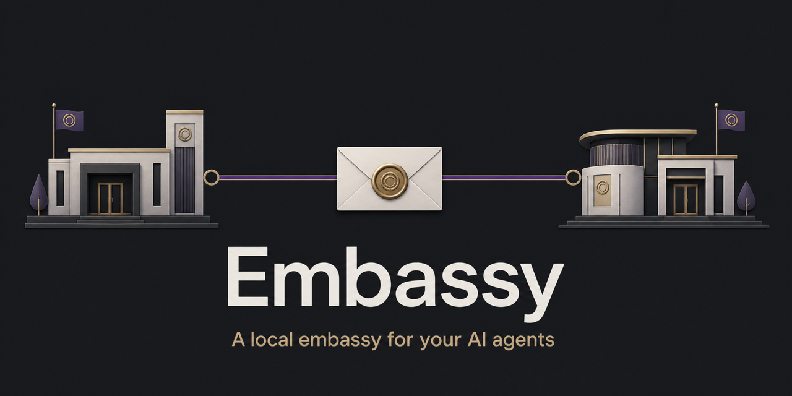

Your Claude Code sessions and Codex desktop tasks, finding each other by name and exchanging messages — in both directions, on one machine, under your explicit control.

Embassy is an alias router and bounded message broker between two products that otherwise can't talk. It is not an orchestrator, and it does not wrap, replace, or re-implement either agent.
One foreground process, one registered Codex task, and explicit Claude selection before outbound messages.
Run embassy serve in a terminal. It stays in the foreground, publishes a local dashboard file, and never daemonizes. Stop it with Ctrl-C and every queued body is gone — by design.
A Codex task registers itself from inside its own process (embassy register-codex). Embassy advertises that one codex-* peer to every compatible live Claude session running as the same OS user.
Before Codex can send outbound, you explicitly select one discovered Claude destination. Merely appearing in discovery never authorizes a send.
Claude uses its native tools; Codex uses the CLI. Busy Codex targets queue and dispatch on idle. Acceptance is immediate; terminal delivery settles later as delivered or expired.
Embassy's security posture is subtraction. The broker itself:
No TCP, no HTTP, no public API. The documented control and callback surfaces are private Unix-domain sockets.
The broker makes no provider API call and ships no telemetry. Delivered text still enters the receiving cloud-backed agent as an ordinary model turn.
Message bodies are bounded (16 KiB), stdin-only, and memory-only inside Embassy. After delivery, the receiving product retains them under its normal conversation policy.
Embassy never reads credentials, Keychain items, transcripts, or either product's configuration. Version checks run one bounded claude --version.
“Local” describes Embassy's broker and route, not model inference. The dashboard shows route metadata — aliases, states, timestamps, queue depth — and never message content. Unknown Claude Code or Codex App Server versions fail closed: Embassy stops rather than guesses. Messages remain untrusted input to the receiving agent, governed by that agent's own permission model. Full details in the security model and architecture.
Honest requirements first — Embassy pins exact versions and fails closed on anything else:
# install and start the broker (foreground, trusted terminal)
npm install -g agent-embassy
embassy serve
# in another terminal: see the Claude sessions Embassy can reach
embassy status
# inside the Codex task: register it (codex- prefix required)
embassy register-codex --alias codex-reviewer@this-mac
# as the operator: select the Claude destination
embassy select-claude --alias advisor@this-mac
# from the Codex task: send (body via stdin, never arguments)
embassy send-to-claude --from codex-reviewer@this-mac --to advisor@this-mac --expects-reply <<'MSG'
Please review the current approach and note the main risk.
MSG
# → accepted with a conversation token; delivery settles asynchronouslyRegistering the Codex task advertises it to every compatible live Claude session running as your OS user. Inbound Claude reach does not select that session for outbound Codex messages. Embassy never changes the Codex task's approval or sandbox policy and never answers an approval request; the task's native policy remains in force.
The full quickstart — including the reply flow, addressing by session UUID, and delivery semantics — is in the README.